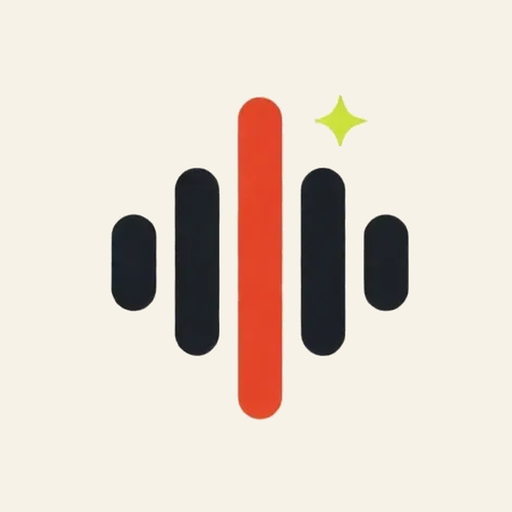

RecAllRecAll
память о звонкахmemory of calls
Память о звонках: пишет, расшифровывает, напоминает. Записывайте разговоры — приложение само не вставляет никаких сигналов; расшифровка Whisper работает на устройстве офлайн; по нажатию «AI-сводка» разговор сжимается в три буллета, а обещания («перезвоню в пятницу…») превращаются в напоминания в календаре. Поиск по расшифровкам с переходом к реплике, PIN и биометрия, шифрование базы данных. Аудио никогда не покидает телефон; на сервер уходит только текст расшифровки — и только когда вы сами нажмёте.Memory of calls: records, transcribes, reminds. Record conversations — the app itself inserts no beeps; Whisper transcription runs offline on the device; one tap of "AI summary" condenses the call into three bullets, and promises ("I'll call you back on Friday…") turn into calendar reminders. Full-text search over transcripts with jump-to-line, PIN and biometrics, database encryption. Audio never leaves your phone; only the transcript text goes to the server — and only when you tap.
СкачатьDownload
Официальные магазины. Если кнопка неактивна — публикация в процессе.Official stores. If a button is disabled, publishing is in progress.
Технические вопросы — appcreators.technolab@ya.ruTechnical questions — appcreators.technolab@ya.ru
СкриншотыScreenshots
Макет вместо скриншотов: здесь появятся настоящие экраны приложения.A mock-up instead of screenshots: real app screens will appear here.
ВозможностиFeatures
Аудио и расшифровка — на вашем устройстве; наружу — только текст по вашему нажатию.Audio and transcripts stay on your device; only tapped text goes out.
Как это работаетHow it works
Три шага от установки до первого обещания в календаре.Three steps from install to the first promise in your calendar.
Нажмите REC во время разговора или для голосовой заметки. На первом запуске — короткая лестница данных и выбор срока хранения.Tap REC during a call or for a voice memo. At first launch — a short data ladder and a retention choice.
Скачайте модель расшифровки — и разговоры расшифровываются сами, офлайн. Поиск найдёт любую реплику.Download the transcription model — and conversations transcribe themselves, offline. Search finds any line.
Нажмите «AI-сводка» — разговор сожмётся в три буллета, обещания уйдут напоминаниями в календарь.Tap "AI summary" — the call condenses into three bullets, and promises become calendar reminders.